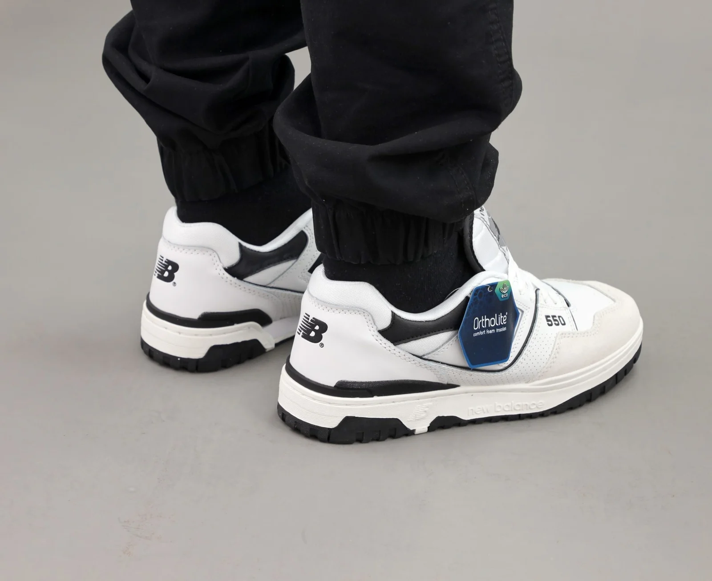

MEDIAL POST
Серединна клиноподібна вставка з EVA підвищеної щільності - Забезпечує стійкість, запобігає підвертанню стопи - Рекомендується при надлишковій пронації
STABILITY WEB
Система фіксації стопи, з'єднана зі шнурівкою - Фіксація та підтримка стопи - Латеральна стабілізація
ROLLBAR
Елемент стабілізації з ТПУ, що розміщується в частині п'яти взуття - Контроль швидкості пронації - Латеральна стабілізація
NDURANCE
Надміцна гума, яка знаходиться в п'ятковій частині зовнішньої підошви - Забезпечує високу зносостійкість
ROCKSTOP
Гнучкий захисний шар - Захищає стопу від гострого каміння під час бігу бездоріжжям - Знімає тиск стопи
TOE PROTECT
Зменшує вірогідність отримання травм у момент зіткнення з перешкодами передньою частиною кросівка.
ACTEVA
Більш легкий матеріал проміжної підошви - Чудово справляється з залишковою деформацією та має великий ресурс
FANTOM FIT
Спеціально розроблений матеріал верху, що забезпечує додаткову м'яку підтримку. Представляє собою сплав двох ультратонких матеріалів та розміщується на кросівку без єдиного шва.

T-BEAM
Супінатор з ТПУ - Підтримка аркового склепіння - Опір скручування в поздовжній осі
N2
Амортизаційний елемент із спіненого матеріалу з використанням азоту - Ефективна амортизація та довговічність - Невелика товщина та вага елемента
NON MARKING
Дозволяє підошві не залишати слідів на поверхні (наприклад, на підлозі спортзалу чи на тенісному корті)
GORE-TEX
Тришаровий мембранний матеріал, який володіє високою водонепроникністю, але при цьому «дихає». - Складається з трьох шарів: тканини, мембрани та внутрішньої підкладки.
IMEVA
Розплавлений EVA (етилвінілацетат), введений у форму підошви - Більш стійкий до стискання
ENCAP
Амортизаційний елемент з ТПУ каркасом, що розміщується в частині п'яти взуття - Поглинання ударів та підтримка стопи - Застосовується EVA або ABZORB
EVA
Етилвінілацетат — легкий та пружний матеріал - Використовується у більшості спортивного взуття
VIBRAM
Матеріал, що використовується в підошві взуття - Напрочуд міцний, довговічний та гнучкий матеріал - Робить підошву не слизькою при вологих погодних умовах.
REVLITE
Інноваційний супер-легкий піноматеріал, на 30% легший за аналогічний. Робить взуття надзвичайно легким та м'яким, при цьому зберігаючи чутливість та міцність.
ABZORB
Елемент із підвищеним поглинанням ударів - Може розміщуватись у будь-якому місці проміжної підошви
C-CAP
Відформована під тиском підошва з EVA - Забезпечує амортизацію - Відрізняється маленькою вагою за рахунок пористої структури
AT TREAD
Універсальна по складу та малюнку протектора підошва, що дозволить почувати себе впевнено, як на дорозі, так і на бездоріжжі
CUSH+
Середній прошарок підошви, що використовується у кросівках для спортзалу - Забезпечує ультра м’які відчуття, без втрати стабільності та міцності
FRESH FOAM
Інноваційна проміжна підошва створена з цільного шматка піни, що забезпечує м'який, більш натуральний перекат. - Невелика вага, краща амортизація та більш інформативний контакт з поверхнею виводять революційну піну Fresh Foam на новий рівень
NB DRY
Відводить вологу з поверхні шкіри - Випаровує вологу з поверхні текстилю - Діє весь термін використання одягу
NB HEAT
Теплоізоляція - Паропроникність - Використовуються натуральні чи синтетичні утеплювачі

NB ICE
Покриття забезпечує охолодний ефект - Активується при впливі поту - Швидке висихання - Повітропроникність
NB FRESH
Антибактеріальна обробка тканини запобігає розвитку шкідливої мікрофлори та виникнення неприємних запахів
HHR
Зносостійка підметка - Глибокий протектор - Використовується у взутті для бігу по перетнутій місцевості

NB GLOW
Світловідбивні елементи забезпечують помітність в умовах слабкого освітлення
NB FLEX
Стрейч тканина - Адаптивна посадка - Свобода рухів - Додатковий комфорт
H2FLOW
Спеціальна система, що виводить вологу за допомогою перфорованих частинок
NB PROTECT
Захисний мембранний матеріал - Не пропускає вологу всередину, при цьому відводить вологу назовні - Вітрозахисний
UPF
Захист від ультрафіолетового випромінювання
WIND RESISTANT
Технологія, що значно зменшує проникнення вітру
WATER RESISTANT
Технологія, що значно зменшує проникнення вологи при короткочасному дощу
FUEL CORE
Унікальне поєднання піни з різною щільністю - Перша забезпечує необхідний рівень амортизації в середній частині - Друга додає швидкості Вашим крокам
FUEL CELL
Піно матеріал, що містить молекули азоту - Забезпечення швидкої пружної амортизації - Довготривале використання
FUEL CELL
Піно матеріал, що містить молекули азоту - Забезпечення швидкої пружної амортизації - Довготривале використання
MINIMUS
Зменшена висота проміжної підошви - Більш природний перепад між п’ятою та носком - Легкі елементи, що посилюють відчуття контакту з поверхнею та додають контролю
ENCAP
Пом'якшувальна серцевина із EVA, що знаходиться в оболонці з поліуретану - Забезпечує підвищену стійкість та погасить вібрацію
TRUFUSE
Поєднання ACTEVA та ABZORB в проміжній підошві
DUAL DENSITY
Дозволяє підвищити стійкість в бічній частині бігових кросівок - Вставки з різною щільністю використовуються для забезпечення жорсткості або м'якості в певних зонах
MOTION CONTROL DEVICE
Вставка в п`ятковій зоні і підметці виступає додатковим стабілізуючим контуром - Забезпечує додаткову стійкість і амортизацію, не жертвуючи стилем
DYNA RIDE
Забезпечує максимальне зчеплення з поверхнею, без надлишкового шару гуми на підошві
XAR-1000
Зовнішня підошва з міцної вуглецевої гуми, що надає підошві довговічності та зносостійкості
ASYM COUNTER
Асиметричний п`ятковий стакан надійно фіксує п`яту та працює на компенсацію надлишкової пронації
ULTRA HEEL
Вплавлений п’ятковий стакан щільно огортає і фіксує п’яту - Подовжена до ахілового сухожилку задня частина зменшує ризик отримання натирань
HYPOKNIT
Функціональний вязаний верх, без надмірних шарів або швів
SURE LACE
Спеціально розроблений матеріал для шнурків - Дозволяє не розв’язуватись шнуркам навіть за найбільш екстремальних умов
META-LOCK
Конструкція середньої частини стопи для підтримки та комфорту

NB RESPONCE
Устілка, що повторює анатомічну будову стопи - Забезпечує більший відгук кросівка під час руху
QUIX
Збільшені гнучкість та зчеплення забезпечують надійну опору в середній частині стопи під час різких бічних рухів
FLEXONIC
Підошва з поперечними канавками по всій довжині поверхні та бічним частинам забезпечують гнучкість - Додаткові вставки в зонах збільшеного навантаження для покращеного зчеплення з поверхнею та підтримки
N ERGY
розроблено для максимального розсіювання удару в зоні п'яти, а також для підвищення бічної стійкості.
ORTHOLITE
Це матеріал устілки, виготовлений з пінного поліуретану зі структурою відкритих «пор»
